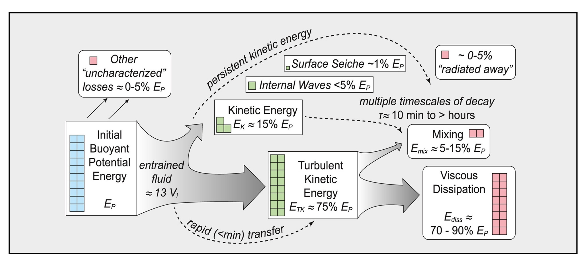

01
Tidewater Glacier Calving
Calving of icebergs from tidewater glaciers inputs significant energy to the surrounding water. Using novel measurements of water velocities from remotely deployed moorings, I investigated the energy flow from a large submarine calving event at Xeitl Sít' (LeConte Glacier) in Alaska.
Through a careful partitioning of potential and kinetic energy, we showed that submarine calving events can accelerate water velocities for several hours, leading to an increase in melting at the glacier terminus. Calving-related feedbacks may be an important contributor to melting from tidewater glaciers.